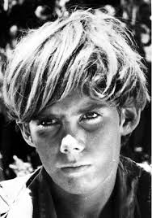

He is the first boy that the reader meets in the story. At the beginning of the book, he meets Piggy, another boy who is on the island, and they find a conch shell which he uses to call the other boys to the meeting. At the meeting all the boys vote for a leader, and he wins making him the leader of all the boys of the island. He insists on keeping a fire going so that a ship will see the smoke and come to save them, which gets pushback from Jack, who wants to focus on hunting. Later in the book everyone else on the island who is alive sides with Jack and they try to kill him. One important characteristic about him is that he deeply cares about getting saved and returning to civilization, which is the reason he cares so much about keeping the smoke signal going. He also wants the boys on the island to stay civilized, which does not happen, and he ends up being by far the most civilized boy on the island in the last chapter after all the other boys turned to savagery.